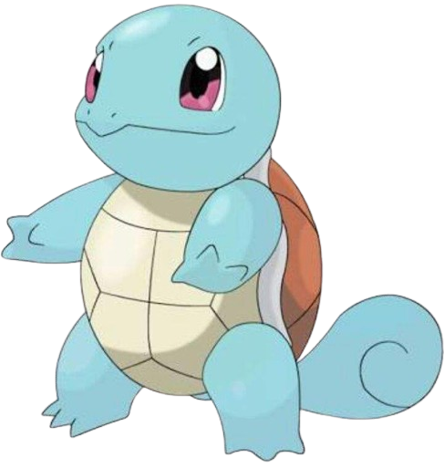

Pokémons Iniciais
Charmander

Bulbasaur

Squirtle

Charmander é do tipo fogo, é facilmente o mais gentil e bem comportado de sua linha evolutiva. Seus sentimentos e emoções podem ser lidos pela chama na ponta de sua cauda.
Evolução: Evolui para Charmeleon a partir do nível 16, que evolui para Charizard a partir do nível 36.
Bulbasaur é dos tipos Planta e Veneno, notoriamente percebível por conta da grande planta em suas costas e de sua coloração verde-água.
Evolução: Evolui para Ivyssauro a partir do nível 16, que evolui para Venussauro a partir do nível 32.

Squirtle é um pokémon de tipo água. Pokémon tipo água são fortes contra pokémon do tipo Fogo, Terra, Pedra mas eles são fracos contra pokémon do tipo Água, Grama, Dragão, Elétrico.
Evolução: Evolui para Wartortle a partir do nível 16, que evolui para Blastoise a partir do nível 36.
Curiosidades
Pikachu tem a capacidade única de acumular eletricidade em suas bochechas, agindo como baterias naturais. Essa energia armazenada permite que Pikachu use ataques elétricos poderosos, como o "Thunderbolt". Essa característica distinta o torna tanto adorável quanto formidável.
Uma curiosidade interessante sobre Pikachu é que ele é um dos poucos Pokémon capazes de falar, pelo menos em sua própria linguagem.
Bulbasaur é conhecido por ter uma planta bulbosa em suas costas. Essa planta atua como um órgão de absorção de nutrientes e também é capaz de emitir um aroma doce para acalmar seus oponentes. Em certos jogos da série principal de Pokémon, Bulbasaur é um Pokémon inicial raro de se obter, sendo muitas vezes exclusivo de certas versões do jogo ou disponível apenas em eventos especiais.
Em certos jogos da série principal de Pokémon, Bulbasaur é um Pokémon inicial raro de se obter, sendo muitas vezes exclusivo de certas versões do jogo ou disponível apenas em eventos especiais.

A chama na ponta da cauda de Charmander é um indicador de sua saúde e vitalidade. Se a chama se apagar completamente, isso pode significar que Charmander está em perigo extremo, podendo até mesmo morrer se a chama se extinguir completamente.
Como um Pokémon do tipo Fogo, Charmander é fraco contra ataques do tipo Água. Essa fraqueza é especialmente evidente em seu estágio inicial, antes de evoluir para Charmeleon e, posteriormente, para Charizard, quando ele ganha o subtipo de Voador, tornando-o menos vulnerável a ataques de Água
Meu Pokémon Favorito
O Pikachu sempre foi e sempre será o meu Pokémon favorito.

 Whatsapp
Whatsapp Gmail
Gmail Instagram
Instagram